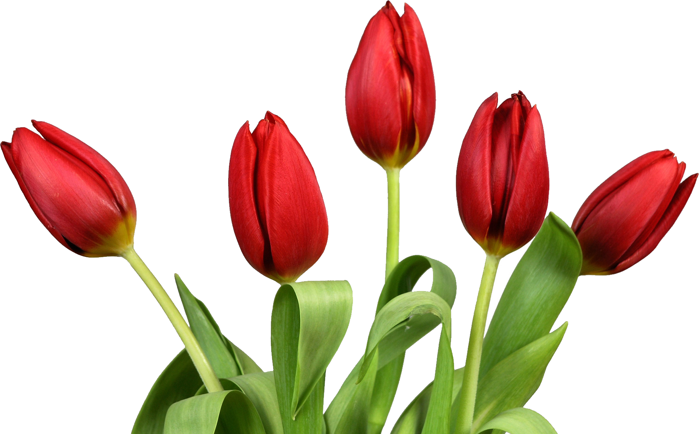
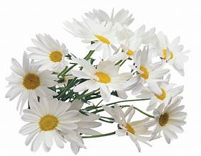

The word "flower" comes from the Latin term florem, which means "blossom." Flowers have been used for
centuries to convey emotions and messages, forming what we now call "the language of flowers." Different
cultures have assigned symbolic meanings to various flowers. This tradition was particularly popular in
Europe and Asia, with flowers even appearing in classical literature such as the works of Shakespeare.
Their symbolism is often tied to mythology, folklore, and ancient practices
Introduction Section
What are flowers?
Flowers are the reproductive parts of flowering plants. They come in various colors, shapes, and
sizes, and are often appreciated for their beauty and fragrance. Flowers play a crucial role in
pollination and are a key part of plant reproduction.
Importance of Flowers
Flowers are not only important for plant reproduction but also hold cultural and symbolic significance in
various societies. They are used in celebrations, rituals, and as expressions of
emotion.
Types of Flowers
You can create a section that lists some common types of flowers along with images and descriptions:
Roses:
Known for their beauty and fragrance, roses are often symbols of love and admiration.
Colors: Red, white, yellow, pink, orange, etc.
Uses: Common in bouquets, perfumes, and as decorations.
Tulips:

Tulips are known for their bold colors and cup-shaped flowers.
Colors: Red, yellow, white, purple.
Uses: Garden plants, gifts, and decorative items.
Lilies:
Lilies are elegant and fragrant, often symbolizing purity and refined beauty.
Colors: White, pink, yellow, orange.
Uses: Weddings, funerals, and ornamental gardens.
Sunflowers:
These large, bright yellow flowers are known to follow the sun and symbolize warmth and positivity.
Colors: Yellow.
Uses: Decoration, symbolism of happiness, and also used for sunflower oil.
Daisies:

Daisies are simple, cheerful flowers with a white petal and yellow center.
Colors: White, pink, yellow.
Uses: Garden flowers, bouquets, and decoration.
Flower Care Tips
You can add a section with advice on how to take care of flowers:
Watering: Different flowers have different water needs. Roses need regular watering, while succulents
(like cacti flowers) need very little.
Sunlight: Some flowers, like sunflowers, need full sun, while others, like orchids, prefer indirect
light.
Soil: Good soil with proper drainage is key for healthy flowers. Some flowers, like roses, need
rich,loamy soil, while others thrive in sandy soil.
Symbolism of Flowers
Add a section about the symbolic meanings of different flowers:
Red Rose: Love and passion.
White Lily: Purity and innocence.
Sunflower: Positivity and adoration.
Daffodil: New beginnings and hope.
Chrysanthemum: Longevity and happiness (in some cultures).
Uses of Flowers
Flowers are used for various purposes:
Bouquets:For special occasions like weddings, birthdays, or just as a kind gesture.
Decorations: In homes, events, and ceremonies.
Medicinal: Some flowers, like chamomile, are used in herbal medicines.
Perfumes: Flowers like jasmine, rose, and lavender are commonly used in the perfume industry.
Fun Facts about Flowers
You can add a fun facts section to make the page more engaging:
The world’s largest flower is the Rafflesia arnoldii, which can grow over 3 feet in diameter.
Titan arum is known as the "corpse flower" because of its strong, unpleasant smell.
Some flowers, like the Morning Glory, open and close at specific times of day.
Gallery Section
Include a gallery of flower images to visually enhance the webpage. Add high-quality images of various flowers
along with their names.